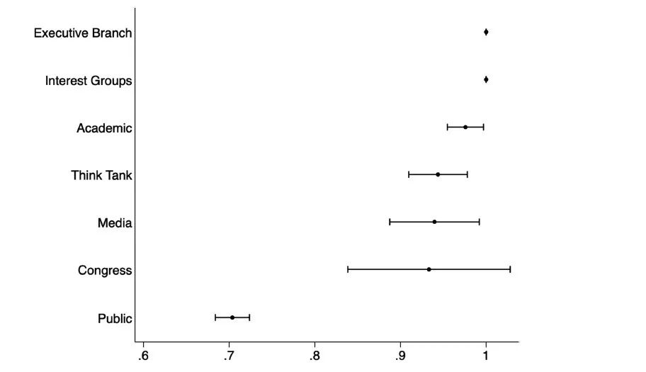
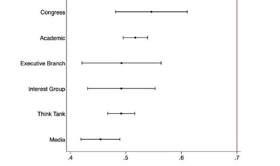
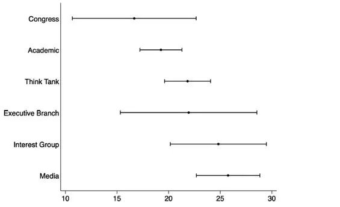

收录于合集

作品简介
作者： Thomas Gift，现任伦敦大学学院（UCL）美国政治中心主任，主要研究兴趣为公共政策与政治行为学。Jonathan Monten，现任伦敦大学学院国际公共政策项目主任，主要研究兴趣为国际安全和美国对外政策。
编译： 郑敖天（国政学人编译员，佩伯代因大学）
来源： Thomas Gift, Jonathan Monten（2020），Who’s Out of Touch? Media Misperception of Public Opinion on US Foreign Policy. Foreign Policy Analysis , Volume 17, Issue 1, January 2021, oraa015,https://doi.org/10.1093/fpa/oraa015.
归档： 《国际关系前沿》2021年第10期，总第37期。
**编者按
**
在美国政治生态中，媒体一直以来都被视为美国政治精英与普通民众相互沟通的重要管道。但近年来，美国民众与美国媒体的关系正大幅度走向恶化。美国社会指责媒体精英们的政治立场与主流民意相悖的声音也甚嚣尘上。在这一背景下，本文试图通过对比美国外交政策专家，特别是媒体专家，与普通民众在对外政策上的立场来进一步了解当代美国社会精英阶层与普通民众在政治观点上的脱节。
内容摘要
本文作者对比了来自媒体、学术界、智库、立法机关、行政机关、以及利益集团的美国外交专家与美国民众在美国国际参与的立场后发现，尽管绝大多数的民众和外交专家都支持美国积极参与国际事务，但外交专家们往往会低估舆论对美国参与国际事务的支持。而在不同领域的专家中，媒体对舆论的误解最为严重。作者认为，除了美国精英阶层在心理上与大众的割裂外，美国媒体的高度职业化也是导致这一现象的原因。后者使媒体更加重视精英阶层的内部讨论而轻视公共意见。同时，美国媒体的市场化也使其更加重视冲突驱动的新闻故事，这放大了美国社会反对国际参与的声音。
文章导读
自冷战结束，美国社会各界关于美国精英和民众在政治立场的脱节的讨论一直没有停歇。特朗普在2016年总统大选中的胜利真正使美国精英阶层意识到美国社会在移民、贸易和全球安全联盟等核心议题上并没有达成所设想的广泛共识。特朗普旗帜鲜明的反媒体立场更让社会各界开始批评媒体对民意的误解和轻视。
虽然学界在理解美国精英阶层对民意的误解上已经有过许多研究，但这些研究往往忽视了外交政策这一维度。在这一背景下，如果美国外交政策专家经常性地误判对外政策上的主流民意，那么这一误解将在美国政府对外交领域的相关评估乃至决策上都会产生巨大影响。
为了了解在外政策领域精英与民意是否存在脱节现象，作者基于芝加哥全球事务委员会（Chicago Council on Global Affairs）和得克萨斯州国家安全网络（Texas National Security Network）2018年对外交政策专家和民众的调查进行研究。该民众调查以在线的方式进行。同时对来自媒体界、学术界、智库、立法机关、行政机关以及利益集团六大类下588名外交政策专家进行调查。该调查共包含两个问题：问题一：“为美国的未来着想，美国应当积极参加国际事务，还是选择在国际事务上置身事外？”问题二仅面向专家群体提问：“你认为有百分之多少的美国人想要美国积极地参与国际事务？”

图一：民众和不同领域的专家支持美国积极参与国际事务的百分比，从上到下分别为：行政机关、利益集团、学术界、智库、媒体、立法机关和公众。

图二：不同背景的外交政策专家预计的支持美国积极参与国际事务的民众所占百分比，从上到下分别为立法机关、学术界、行政机关、利益集团、智库和媒体。
问题一的调查结果如图一所示，共有70%的美国民众支持美国积极参与国际事务。而在外交专家中，这一比例更是高达96%。这证明绝大多数民众和外交专家都支持美国实行积极的外交政策。在回答问题二的结果如图二所示，外交专家的估计值多在50%左右，比真实的民调结果要低约20%。而在不同领域的外交专家中，媒体界的专家的估计值最低，仅为45%。这说明媒体在关于外交政策的舆论估计最不准确。
为了进一步理解美国外交专家对舆论的误解程度，作者创建了一个距离变量Ei（每个领域的专家对公众支持美国积极参与国际事务的估计值与真实民调结果之间差值的绝对值），并表示为以下公式：
Distancei = |Ei − A|，
其中Ei为专家对公众支持美国积极参与国际事务的估计值，而A为真实民调结果。根据以上公式，结果如图三所示。

图三：专家估计值与真实民调间的“距离”，从上到下分别为立法机关、学术界、智库、行政机关、利益集团和媒体。
尽管所有的外交专家都错误估计了公众支持参与国际事务的百分比，媒体背景的专家的错估程度更为严重，其距离值约为26%。而其它领域专家的距离值则为21%。作者随后通过回归分析证明了除了媒体背景专家与其它背景专家的“距离值”的差值具有显著性差异。
什么原因导致了外交专家对公众在外交政策上的立场的误判？作者认为这一现象可以通过“相似权变模型（similarity contingency model）”来解释。这一模型认为主体对客体立场的推断基于主体对客体与自己的广泛相似程度的评估。如果主体认为客体与自己广泛相似，则主体更易于“投射”（project）客体与自己观点相似。反之，如果主体认为客体与自己广泛不同，则主体更易于“带有成见地”（Stereotype）认为客体与自己的观点不同。
作者因此认为，外交专家一般会倾向于认为自己与大众在习俗、教育背景、政治知识和政治选择上具有广泛的不同。如数据所示，大多数精英阶层都带有更强的国际主义倾向,并导致其最终“产生美国大众反对美国参与国际事务”的固有印象。2019年的一项研究也显示，美国的精英阶层正越发地认为美国大众在政治上比自己更加倾向右翼。（Broockman and Skovron 2018; Hertel-Fernandez, Mildenberger, and Stokes 2019.）这一趋势也导致了美国的保守主义者更努力地宣传右翼政治观以取悦他们想象中的正在走向右倾的美国大众。
本研究想解答的另一个核心问题是：为什么美国的媒体精英比其他精英与大众的脱节更加严重？作者认为，美国媒体的高度职业化使其更加重视精英阶层的内部讨论。由于对外政策领域涉及更广泛的专业知识，这导致美国媒体重视精英观点而轻视公众观点的趋势更加严重。同时，美国媒体的市场化也使其更加重视冲突驱动的新闻故事，这放大了美国社会中反对国际参与的声音。美国的媒体精英也倾向通过将一些单一事件放大处理以宣传自己支持的某种政治上的宏大叙事，从而导致其对民意的理解出现错位。
文章的最后，作者认为目前美国精英对民意在对外政策上的误解既可能出自精英阶层对民众带有的长期成见心理，也可能出自近年来保守主义者的反国际主义倾向。而在媒体领域，美国媒体的专业化和市场化进一步助长了其对美国民意的误解。作者同时表示，学界对于影响外交政策专家误判民意的具体因素仍需要进一步的研究。
译者评述
本文创造性的将国际关系政策维度融入了精英与民众的政治隔阂这一传统课题的讨论之中。该研究对美国精英阶层，尤其是媒体精英，对美国民意的误解的剖析揭示了美国政治精英与普通民众在核心政治议题上的隔阂。作为当代美国精英阶层的代表，美国媒体精英与普通民众在政治生活上的脱节，导致其往往会从抽象的政治叙事（自由主义、保守主义、反全球化等）来对民意进行“想象”，而无法从实践的和历史的角度出发了解美国民众的政治观点和诉求，最终导致其对美国民意的误解。同时，中国的国际关系研究者也应在研究学习中避免陷入本文讨论的“精英主义陷阱”之中，在扩展自身专业知识和国际视野的同时，也应以实践的态度积极了解和学习在象牙塔之外的人民群众对当今国际关系和对外政策的理解，从而更加全面地做好立足中国，面向世界的国际关系研究。
词汇整理
**耸人听闻的渲染 Sensationalize **
**偏见 成见 Preoccupation **
**凸起 突出部 特点 Salience **
**进展 Headway **
**瓦解 Disaggregate **
审校 | 王芷汀 李博轩
排版 | 胡蝶 陈炜昊
文章观点不代表本平台观点，本平台评译分享的文章均出于专业学习之用, 不以任何盈利为目的，内容主要呈现对原文的介绍，原文内容请通过各高校购买的数据库自行下载。

国政学人
支持学术公益与知识传播
微信扫一扫赞赏作者 __赞赏
已喜欢，对作者说句悄悄话
取消 __
发送给作者
发送
最多40字，当前共字
上一页 1/3 下一页
长按二维码向我转账
支持学术公益与知识传播
受苹果公司新规定影响，微信 iOS 版的赞赏功能被关闭，可通过二维码转账支持公众号。